Open-source research infrastructure
The Experience
Layer for AI Agents.
Experience is portable. Capability is earned.
TRAJYN records what an agent did, verifies what changed, and packages reusable procedures for another agent to try.

The problem
Agents keep solving
the same problem.
A transcript records one execution. To use it on a different task, an agent still has to learn which steps apply, where the inputs come from, and what outcome to verify. TRAJYN makes those dependencies explicit in a capability capsule.
Architecture
From execution
to evidence.
Select a stage to see what information enters and leaves the runtime. The simulator’s private state stays with the independent verifier.
- $stages

Interactive demonstration
Open the trace.
This replay follows an archived Qwen3-8B execution. Each tool result came from the benchmark environment. The final stage shows the capsule derived from this verified run.
Research
Does experience transfer?
Every condition runs on the same held-out tasks. Completion comes from verified environment state. We publish the failures alongside the successes.
Roadmap
Infrastructure
in the making.
TRAJYN is an experimental Python runtime and evaluation framework. The roadmap tracks what has shipped and what remains research.
Available
Seeded stateful workflows, evidence-grounded induction, branch-aware capsule delivery, and paired evaluation.
Under study
When matched public observations justify sharing guidance, and how guidance affects completion across model families.
Planned
Versioned capability registries with revocation, SDK integrations, and distributed exchange.